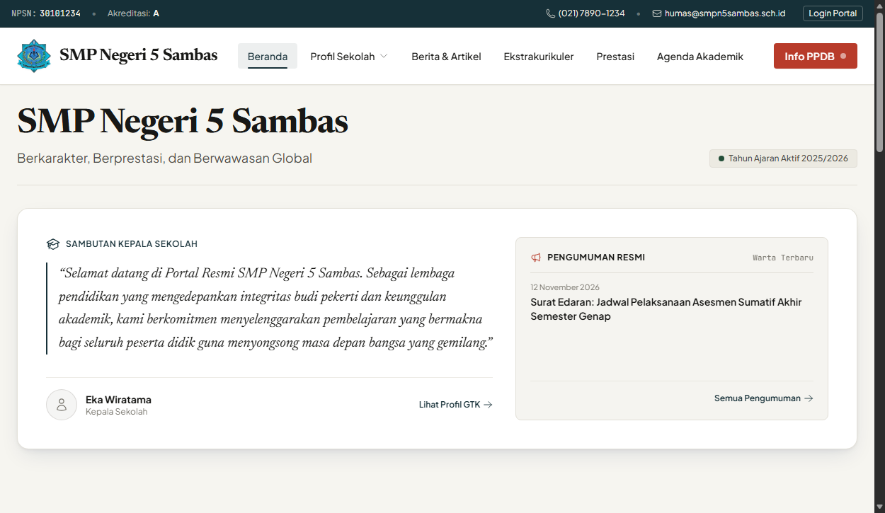
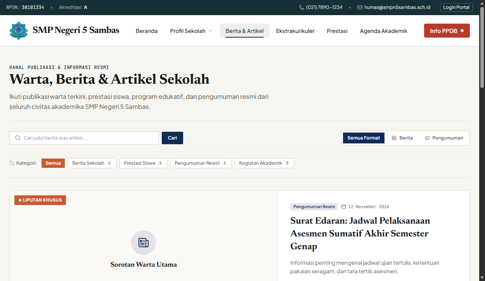
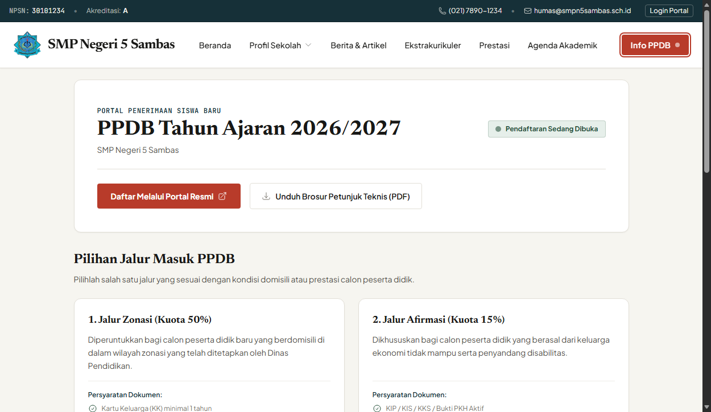
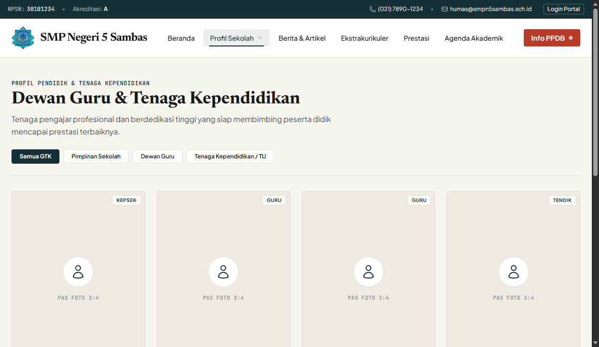
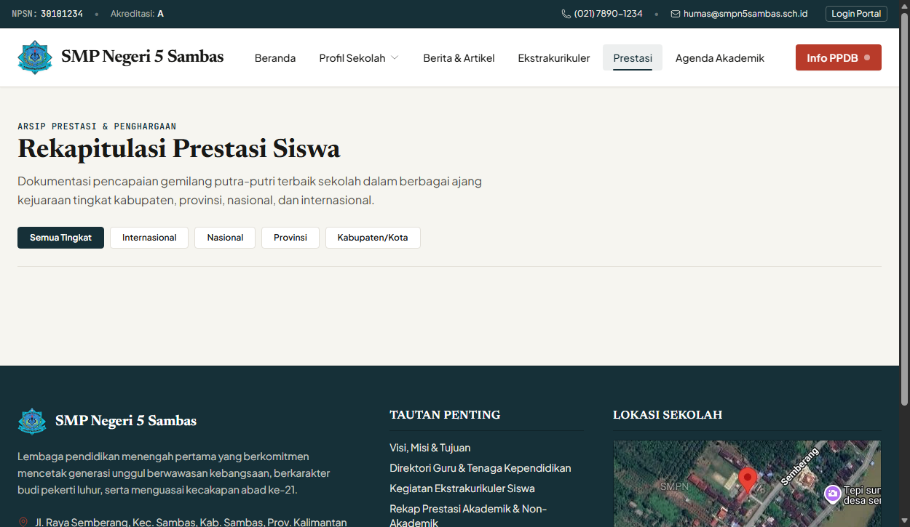
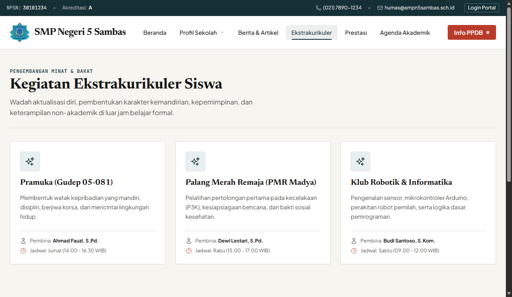
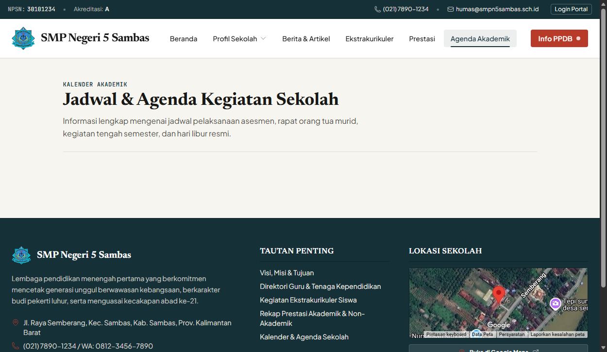
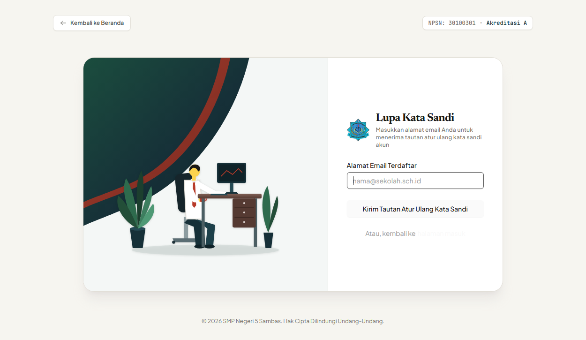
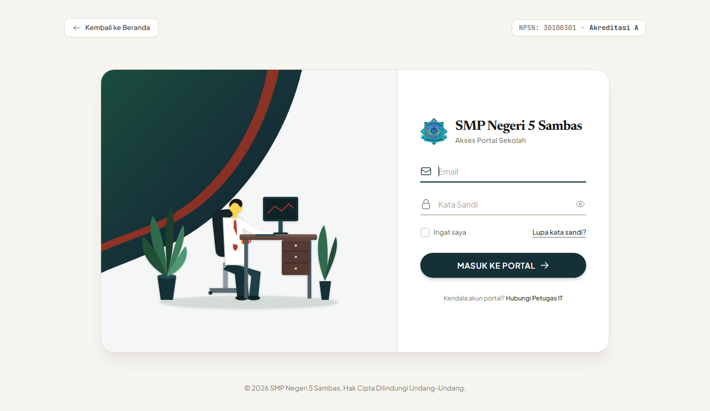

Gambar 3.3: Halaman Pembaruan Profil Akun Petugas
| Bab | Topik Pembahasan | Halaman |
|---|---|---|
| BAB I | PENDAHULUAN & ARSITEKTUR PORTAL 1.1 Gambaran Umum Sistem Portal 1.2 Matriks Hak Akses & Peran Pengguna (RBAC) 1.3 Kebutuhan Sistem & Kompatibilitas Browser |
3 |
| BAB II | PANDUAN PENGGUNA PUBLIK (SISWA & MASYARAKAT) 2.1 Menjelajahi Beranda Utama & Asymmetric Bento Grid 2.2 Membaca Warta, Berita & Pengumuman Sekolah 2.3 Informasi PPDB & Alur Pengunduhan Brosur 2.4 Direktori Dewan Guru & Tenaga Kependidikan 2.5 Rekapitulasi Prestasi Siswa & Filter Tingkat Lomba 2.6 Direktori Ekstrakurikuler & Jadwal Latihan 2.7 Kalender & Agenda Akademik Sekolah 2.8 Aksesibilitas Tombol Scroll to Top & Tampilan Mobile |
4 |
| BAB III | PANDUAN AUTENTIKASI & KEAMANAN AKUN 3.1 Prosedur Masuk Petugas (Login CMS) 3.2 Prosedur Pemulihan Kata Sandi (Lupa Password via Email) 3.3 Memperbarui Profil Akun Petugas 3.4 Pengaturan Keamanan & Penggantian Kata Sandi Pribadi |
9 |
| BAB IV | PANDUAN PENGELOLAAN DATA CMS (ADMINISTRATOR) 4.1 Dasbor Ringkasan & Metrik Utama 4.2 Manajemen Berita & Pengumuman Sekolah 4.3 Manajemen Data Dewan Guru & Staf GTK 4.4 Manajemen Unit Ekstrakurikuler 4.5 Manajemen Arsip Prestasi Siswa 4.6 Manajemen Kalender & Agenda Akademik 4.7 Pustaka Media (Media Library & Unggah Berkas) 4.8 Manajemen Menu Navigasi Header 4.9 Pengaturan Identitas Sekolah & Konfigurasi PPDB 4.10 Pemantauan Log Aktivitas Keamanan (Audit Trail) |
12 |
| BAB V | PANDUAN PEMELIHARAAN & TROUBLESHOOTING 5.1 Pengujian Mail Gateway via CLI ( php artisan mail:test)5.2 Pembersihan Cache Aplikasi ( php artisan optimize:clear)5.3 Kontak Bantuan & Layanan IT Sekolah |
19 |
Portal Resmi SMP Negeri 5 Sambas adalah platform informasi berbasis web modern yang dirancang untuk memfasilitasi transparansi publik, publikasi prestasi siswa, penyampaian warta kegiatan sekolah, serta pelayanan informasi Penerimaan Peserta Didik Baru (PPDB) secara daring.
Sistem dibangun menggunakan teknologi mutakhir arsitektur monolithic SPA (Single Page Application) dengan framework backend Laravel dan frontend React Inertia.js dengan penataan antarmuka Tailwind CSS. Sistem ini memiliki integrasi perayapan mesin pencari (SEO Friendly), protokol Open Graph untuk berbagi ke media sosial, serta standar keamanan berlapis sesuai pedoman OWASP Top 10.
Untuk menjaga integritas dan keamanan data, sistem membagi hak akses ke dalam 4 (empat) tingkatan peran yang terisolasi dengan ketat:
| Peran (Role) | Tanggung Jawab | Hak Akses & Batasan |
|---|---|---|
| Super Admin (Tata Usaha / IT) |
Pengelola tertinggi infrastruktur dan seluruh data sekolah. | Akses penuh ke seluruh modul CMS, pengelolaan profil sekolah & PPDB, manajemen guru, ekstrakurikuler, prestasi, agenda, menu navigasi, dan audit log keamanan. |
| Editor (Dewan Guru Pembina) |
Penyusun dan peninjau materi publikasi. | Dapat membuat, mengedit, mempublikasikan warta/berita sekolah, mengunggah dokumentasi media, serta melihat agenda kegiatan. Tidak dapat mengubah konfigurasi sistem. |
| Contributor (Pengurus OSIS / Ekstrakurikuler) |
Penyusun draf liputan kegiatan siswa. | Hanya dapat membuat tulisan warta dalam status Draft untuk kemudian ditinjau dan diterbitkan oleh Editor atau Super Admin. |
| Pengguna Publik (Siswa, Wali Murid, Umum) |
Konsumen informasi resmi sekolah. | Akses bebas tanpa login ke seluruh direktori publik, pengunduhan brosur PPDB, pencarian profil guru, dan kalender kegiatan. |
Aplikasi web ini dirancang sangat ringan, adaptif, dan responsif terhadap berbagai ukuran layar (desktop, laptop, tablet, serta smartphone). Pengguna disarankan menggunakan peramban web versi modern berikut untuk performa visual terbaik:
Halaman beranda merupakan gerbang utama pengunjung saat mengakses alamat website sekolah. Antarmuka beranda memadukan tipografi editorial elegan dengan tata letak Asymmetric Bento Grid yang informatif:

Komponen utama pada beranda meliputi:
Untuk membaca arsip berita sekolah, pengunjung dapat memilih menu Berita pada bilah navigasi atas (URL: /berita):

Fitur yang Tersedia untuk Pengunjung:
Halaman PPDB (URL: /ppdb) merupakan pusat pelayanan informasi bagi calon siswa baru dan orang tua murid:

Panduan Bagi Calon Wali Murid:
Masyarakat dapat mengenal seluruh tenaga pengajar melalui menu Guru & Staf (URL: /guru-dan-staf). Halaman ini menampilkan foto formal, nama lengkap, NIP resmi, serta mata pelajaran yang diampu:

Arsip kejuaraan yang diraih siswa tercantum pada menu Prestasi (URL: /prestasi). Pengunjung dapat menyortir daftar berdasarkan tingkatan kejuaraan:

Melalui menu Ekstrakurikuler (URL: /ekstrakurikuler), calon peserta didik dapat mengeksplorasi ragam kegiatan pengembangan bakat dan minat:

Menu Agenda (URL: /agenda) menyajikan lini masa kegiatan resmi sekolah agar para orang tua murid dapat merencanakan kegiatan pendampingan belajar:
Akses ke ruang kerja pengelolaan CMS dibatasi hanya untuk staf berwenang melalui halaman login (URL: /login):

Langkah-Langkah Masuk:
http://domainsekolah/login.
Apabila petugas lupa kata sandi akunnya, sistem menyediakan alur pemulihan mandiri melalui email resmi tanpa perlu menghubungi tim IT secara langsung:

Tahapan Pemulihan Kata Sandi:
no-reply@smpn5sambas.sch.id dengan subjek "Instruksi Atur Ulang Kata Sandi - SMP Negeri 5 Sambas".
Setelah berhasil masuk, setiap petugas dapat memperbarui identitas dirinya melalui menu Pengaturan Profil (URL: /settings/profile) dan mengganti kata sandi di menu Keamanan (URL: /settings/security):

Setelah masuk, administrator akan disambut oleh Dasbor CMS (URL: /admin/dashboard) yang menyajikan rekapitulasi data sekolah secara instan:

Kartu Statistik Metrik:
Modul Berita (URL: /admin/posts) digunakan untuk mengelola seluruh publikasi artikel, liputan kegiatan, dan pengumuman resmi:
Klik tombol "Tambah Postingan" di sudut kanan atas untuk membuka formulir editor (URL: /admin/posts/create):
Panduan Pengisian Formulir Berita:
Untuk memperbarui daftar pengajar, buka menu Pendidik & GTK (URL: /admin/staff):
Langkah Menambah Data Guru / Staf Baru:
Pengelolaan unit ekstrakurikuler dilakukan melalui menu /admin/extracurriculars:
Langkah Pengisian Ekstrakurikuler:
Setiap capaian kejuaraan yang diraih siswa wajib didokumentasikan di menu /admin/achievements:

Formulir Pencatatan Prestasi:
Pengelolaan agenda sekolah dilakukan pada menu /admin/agendas:

Setiap entri agenda memuat Judul Kegiatan, Tanggal Mulai, Tanggal Berakhir, serta Lokasi Kegiatan (contoh: "Aula Utama SMPN 5 Sambas").
Menu Media (URL: /admin/media) berfungsi sebagai tempat penyimpanan terpusat seluruh foto kegiatan, infografis, dan berkas sekolah:
Struktur tautan navigasi pada bilah menu atas dapat diatur melalui menu /admin/menus:

Menu Pengaturan (URL: /admin/settings) adalah modul paling krusial untuk mengonfigurasi identitas institusi dan status pendaftaran peserta didik baru:
Parameter yang Dikelola:
2026/2027) dan tautan formulir pendaftaran dinas (misal: https://siap-ppdb.kemdikbud.go.id).
Demi keamanan operasional, Super Admin dapat meninjau rekaman audit trail pada menu /admin/activity-logs:
Sistem mencatat secara permanen setiap aktivitas: waktu login berhasil, percobaan login gagal, penambahan data, pengeditan berita, serta alamat IP dan perangkat yang digunakan petugas.
Apabila email pemulihan kata sandi tidak terkirim, administrator server dapat menguji koneksi server email secara langsung melalui baris perintah terminal:
php artisan mail:test email_tujuan@gmail.comPerintah ini akan melakukan handshake langsung ke server SMTP pengirim, mengirimkan pesan uji coba, serta menampilkan diagnosa kesalahan jika port terblokir atau kredensial kata sandi salah.
Jika terjadi perubahan konfigurasi .env atau penambahan menu yang belum terlihat di peramban, jalankan perintah pembersihan cache berikut:
php artisan optimize:clear
php artisan config:cache
php artisan route:cache
php artisan view:cacheApabila staf pengajar atau administrator mengalami kendala teknis di luar panduan ini, silakan menghubungi tim administrator:
https://smpn5sambas.sch.id— Dokumen Buku Panduan Resmi SMP Negeri 5 Sambas (Edisi Produksi 2026) —